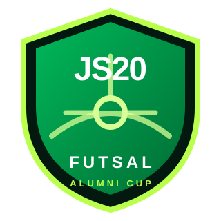

G
TEAM GREEN
SQUAD REVEAL PENDING

JS20FUTSAL CUP EDITION2026BACK TOGETHER. BACK ON THE PITCH.
SQUAD REVEAL PENDING
SQUAD REVEAL PENDING
참가자 명단이 확정되면 팀 추천 기능이 활성화됩니다.
참가자 명단을 확정한다.
두 팀의 인원과 전력을 균형 있게 추천한다.
친구들끼리 한 번 더 조정하고 최종 확정.
월드컵 발표처럼 팀별 라인업을 공개한다.
라인업 확정 후 공개됩니다.
FINAL WINNER
TOP SCORER
TOP ASSISTS
PLAYER OF THE MATCH
경기 종료 후 결과, 득점왕, 도움왕, MVP와 우승팀을 이 페이지에 기록합니다.
매년 날짜·선수·결과만 업데이트하면 같은 주소에서 계속 사용할 수 있도록 구성했습니다. 이전 대회 기록도 에디션별로 쌓을 수 있습니다.
17 OCT · PRE-MATCH
→